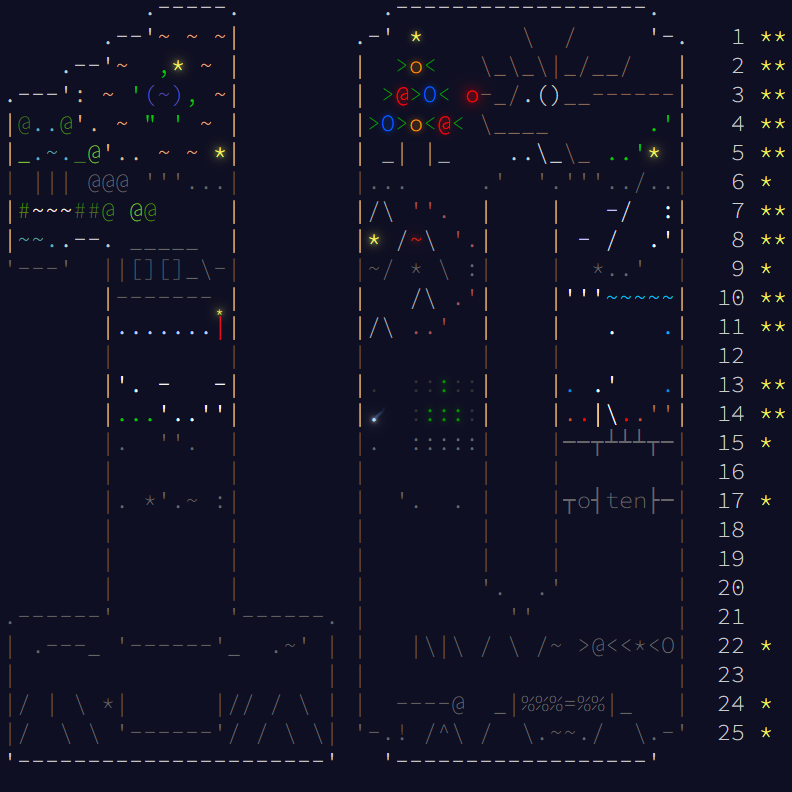

My progress on the Advent of Code challenge.
This year, I decided to participate in the Advent of Code challenge in Python. While I was unable to figure
out every challenge, particularly the later, more difficult ones, I did learn a few key things while working on solutions.My progress on the Advent of Code challenge.
- First, I gained an understanding of bit arrays, and used them as a compact method of storing sets of boolean data (see my implementation, bitboard.py).
- Additionally, I made an implementation of the graph data structure to assist in solving the challenges, including an implementation of the depth-first search algorithm. On the backend, my implmentation uses the bit array I created to efficiently store edge relations, both directed and undirected (see graph.py).
- Finally, I created a grid implementation to work with more familiar x and y coordinates in a definite space.